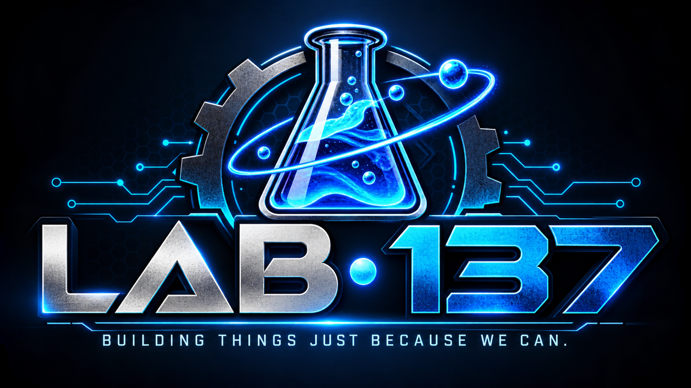

📦
Live web app
FreightMath
Track pallets, changing crew sizes, labor-hours, and productivity without reconstructing a shift from memory.
Launch FreightMath ↗
A home for practical utilities, ridiculous games, and ideas too interesting not to try. Building things just because we can.
Small tools built to solve real problems.
Track pallets, changing crew sizes, labor-hours, and productivity without reconstructing a shift from memory.
Launch FreightMath ↗A warehouse backroom operations tracker for staffing, pallet processing, truck progress, and shift reporting.
Launch Backroom Ops ↗Because sometimes the best reason to build something is that it's funny.
Black Friday hit T.J. Maxx. Grab every deal, dodge the packed aisles, and race to checkout. Use the Zebra scanner laser to send shoppers scurrying, and choose desktop or touch controls.
Play Maxx Mayhem! ↗
A tiny creature with a big personality—and a world you help grow. Discover words, hear his peculiar voice, collect wearable rewards, decorate his nest, build a playground, and unlock a lantern-lit village.
Help us test on desktop, phone, or tablet. Tell us what delights you, what breaks, and how the sound, saving, and unlocks feel.
Play Crumb & help test ↗Leave feedback on GitHub ↗A marble tumbles inside a shape with an extra direction. Rotate its shadow, line up the glowing hole, and launch the ball through.
Play Tesseract ↗Fire rubber bands, dodge Danny’s return fire, collect pizza powers, and survive the managers. Three levels, Ninja unlocks, and unpredictable backroom chaos.
Play Boss Shift ↗Sort real merchandise, build combos, and survive increasingly chaotic shifts. Pizza boosts, arcade sounds, and questionable corporate wisdom.
Play Backroom Blitzz ↗A chaotic backroom-inspired arcade shooter. Managers, mayhem, and the occasional pizza.
Get the Windows release ↗A workplace-inspired platformer with hazards, coffee, and an exit worth reaching.
AI, simulations, science, and interesting detours.
The standup side of Harmonious Shadowmind. Maine, self checkout, keyboard warriors, and thoughts that probably should’ve stayed inside.
Take a seat ↗Robot folk, human questions, comedy, and experimental stories. Step into Danny’s late-night listening room.
Enter the listening room ↗Rotate a tesseract through the fourth dimension, explore its projection, and compare it with a cube casting a flat shadow.
Explore 4D ↗A little Lab-137 on your Android home screen.

A festive circuit board brought to life with tilt-responsive parallax and a spinning cooling fan. Designed for portrait Android screens.
The download will become available when the package is uploaded.
Android only. Menu names and live wallpaper support vary by device. Not an iOS or Windows installer.

A snow globe frames a steam train and a lantern-lit Victorian village in this Christmas wallpaper made for Jen. Brass gears turn beneath the globe, and the scene shifts as you tilt your phone.
Direct download · Android installer
Lab-137 is an independent collection of projects: some practical, some playful, and some that might not make sense until you try them. No grand corporate mission. Just making things and seeing where they go.